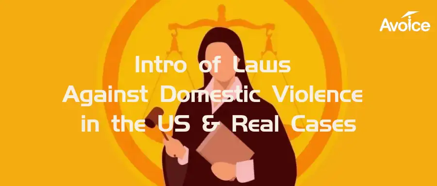

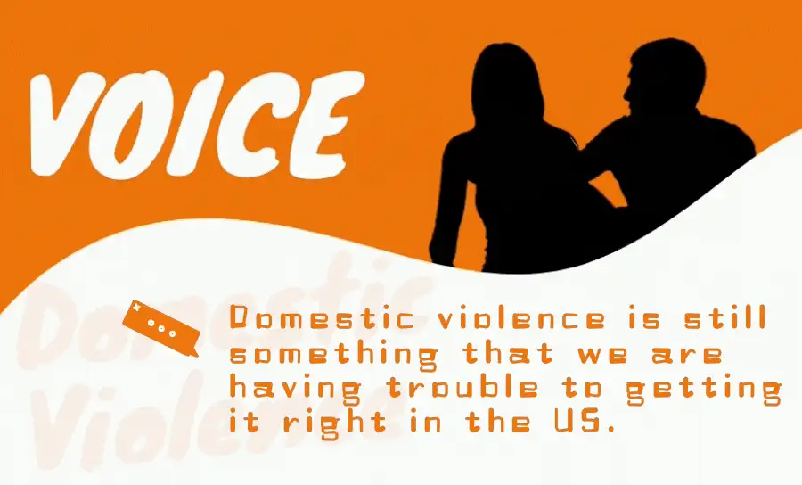

Lecturer
Professor Crout is a Senior C.V. Starr Lecturer and a licensed attorney. She earned her Masters of Professional Studies in International Development summa cum laude from Cornell University, and received her J.D. and LL.M. in Civil & International Human Rights Law magna cum laude from the University of Notre Dame Law School.In her professional practice, she has worked with Kentucky Legal Aid of the Bluegrass to represent victims of domestic violence in court to acquire and enforce Domestic Protection Orders against abusive partners or family members. Her current research focuses on the rights of migrant women and constitutional law.
Introduction
This discussion will consist of a brief overview of the domestic violence law and practice in the United States, with an emphasis on the legal process of acquiring protection orders against abusive partners. This talk will focus specifically on indigent clients consulting legal aid organizations and will include a description of resources available for victims of domestic violence beyond the courtroom.
Part of the reason
Culture of gun possession in the US
The protection system is not enough to protect the victims beyond the courtroom
CONTENT
Today, we are going to talk about how domestic violence works and in particular, the judicial system in the US.
Points：
1. Overview of law and the commonly-used terminology in domestic violence proceeding
2. How to use the law to protect the rights of our clients in the courtroom
3. The common resources outside the courtroom in the US
The American Justice System
The system of law in the US is meant to be complementary.
Federal Law: central government
State Law typically govern day-to-day operation: health, education, Criminal Law, contract, etc.
Since domestic violence typically falls into Criminal Law, most of the domestic violence statutes are State Law statutes.
There are also some complementary Federal statues：The Violence Against Women Act （very popular, very well-known）introduced by Bill Clinton. This Act makes it a crime to either commit domestic violence against the victim or to violate the existing restraining order, or what we've called a protective order. Unfortunately, the protection stipulated within the act expired under the administration of President Donald Trump but President Joe Biden and his administration, after taking office have made the resumption of this Act a priority, including some new protection for women which are highly useful.
In terms of State Law, State Kentucky will be specifically focused. This whole region is considered the Appalachian region(阿巴拉契亚山脉)
. It is a region of mountain that separates the state from the rest of the nation. It is a bit isolated.
Their primary industry was that of coal. Coal was recently facing a tough time in the US so that the interests in the Appalachian region has suddenly moved away. In other words, this region is experiencing a high level of poverty.
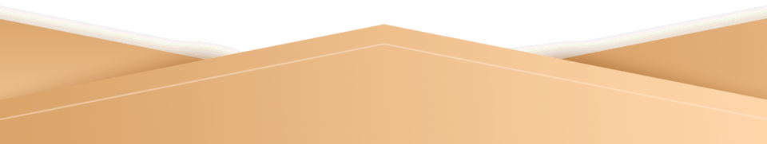
Kentucky Law classifies relationship violence into two types: domestic violence and interpersonal/dating violence.
Domestic violence specifically deals with violence committed between individuals living in the same house, in other words, family members.
“[A] spouse, including a former spouse, a grandparent, a grandchild, a parent, a child, a stepchild, or any other person living in the same household.”
Another group falls into this type is members of unmarried couple.
“An unmarried couple which allegedly has a child in common, any children of that couple, or a member of an unmarried couple who are living together or have formerly lived together.”
Unmarried couple are common in this state because of the poverty that the state experiences. Many individuals receive state benefits on a monthly basis. Should individuals decide to become married, this may compromise the benefits or the amount of benefits that they receive. So in order to keep their benefits from the government on a regular basis, individuals decide to, instead of becoming married, live in co-habitat normally.
Who is a victim of dating violence?
A dating relationship is describing individuals who are having or have had a relationship of romantic or intimate nature.
Determining whether it is a dating relationship is actually quite contentious. They may argue it is not a dating relationship so that they are not subject to domestic violence orders.
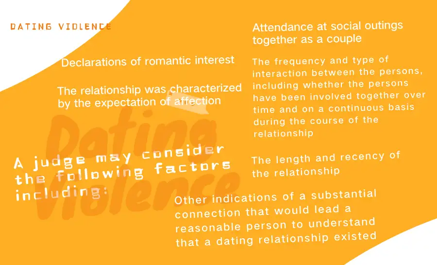
Based on my experience at the courtrooms, a judge often refers to the messages or social media of the two individuals to determine if a dating relationship is present.
01
# The Definition of Domestic Violence and Dating Violence common factors:
Physical injury,
Serious physical injury,
Stalking,
Sexual abuse,
Strangulation,
Assault,
Or the infliction of imminent fear of any of the above.
02
# What are the options for a victim of domestic or dating violence?
Report the criminal activity firsthand;
File for an order of protection.
Should the offender not be imprisoned or held within county jail so that they do not present further harm to the victim, it's likely to pursue an order of protection.
A Protection Order is issued by the court. If a court finds that that domestic/dating violence has occurred, and may again occur, it may order a wide range of remedies. This includes, but is not limited to :
Prohibiting:
All forms contact (no text message between the offender and the victim, no email to say they are sorry, no taking to the victim through their family members, all of this must stop, or the offender is at the risk of violating the protection order.);
Coming within 500 feet of the protected person;
Coming within 500 feet of a protected location (home, school, work, etc,);
Disposing of or otherwise damaging the possessions of the protected person. (If the victim left items behind, perhaps in the offender’s residence, they would not be able to destroy that without violating the order. They are under an obligation to return that property to the victim, which helps, in turn, maintain their financial security. )
They may also be prohibited from other actions that the court believes will be of assistance in eliminating future acts of domestic violence and abuse:
Directing that either or both of the parties receive counseling services available in the community in domestic violence and abuse cases;(parental counseling, drug abuse counseling, etc. )
Ordering the offending party to vacate a shared residence (In Kentucky, this is an incredibly important issue because it allows the victim to vacate from the lease agreement. Before this reform, victims will still be held viable under the lease agreement and they either had to continue to pay rent, they suffered from a charges on their credibility report should they not pay the rent and the offender cannot pay it themselves, or in the worst case scenario, they did continue to live with the offender who will continue to threaten the financial security and even the life of the victim. );
Grant temporary custody of children;
Grant temporary child support.
Steps to acquiring
Protection Orders
File a petition for a protection order;
A judge reviews the petition and decides whether or not domestic violence occurs or may occur;
An evidentiary hearing is set within 14 days of the petition;
The evidentiary hearing is held, and the judge either issues a Protection；
Order or dismisses the petition if they find it has no basis and no domestic violence occurs.

How does a victim apply
for a protection order?
Go to the County Courthouse which should be open 24/7 to receive the text of petition.
They will then submit a completed petition which includes all relevant information needed for the judge to consider the application.
♦ The Petition looks like this:
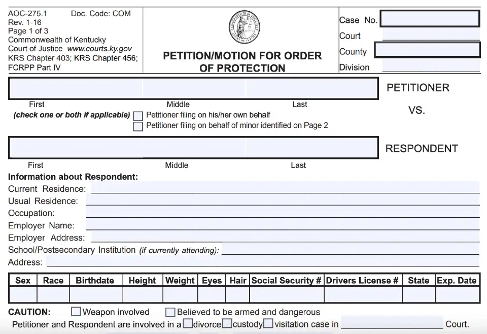
（name, current residence, the occupation of the respondent or the offender, a note of caution, whether ot not the respondent might have a weapon or not, or might be believed to be armed or dangerous, reminding the officers to approach the respondents with caution. ）
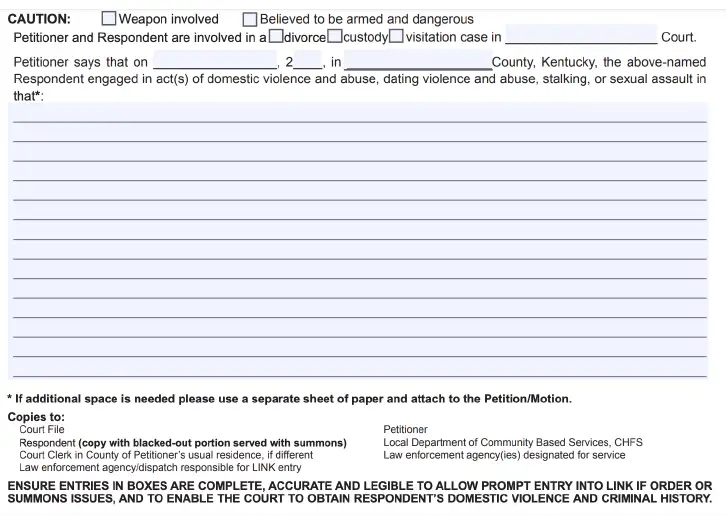
A section for the petitioner to write their experience of domestic violence or dating violence.
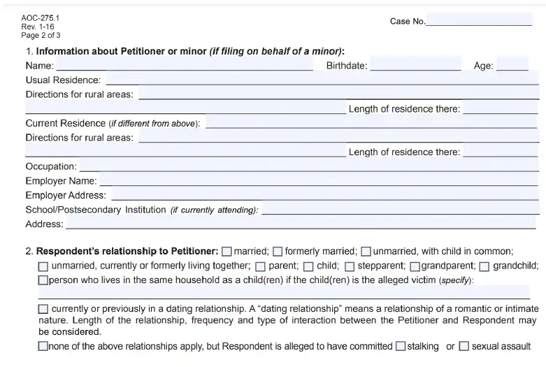
Information about a petitioner who is a minor or filing on behalf of a minor who is not competent enough to fill out the forms by themselves.
Includes respondent's relationship to petitioner to decide whether its domestic violence or dating violence.
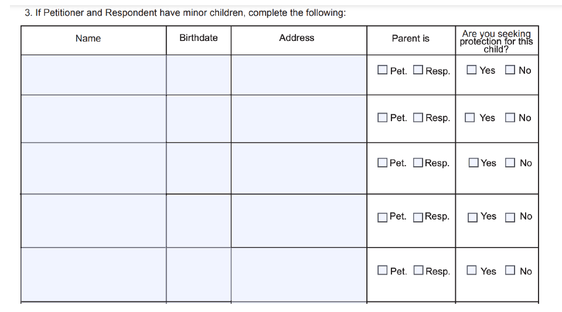
Information about their children(whether they share them in common, whether they are seeking for help on behalf of this child. )
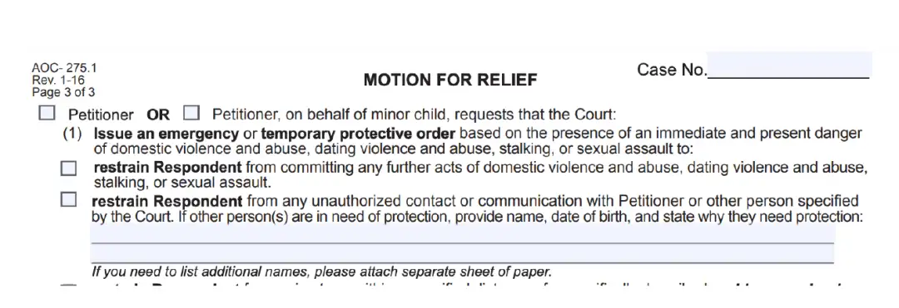
Type of request that the petitioner wants to include in the protection order.
(eg. Restrain respondent from committing any further acts of domestic violence. They can decide whether or not they want to continue to have contacts with the respondents. For example, maybe they only want to have contacts on the issues of their kids. )
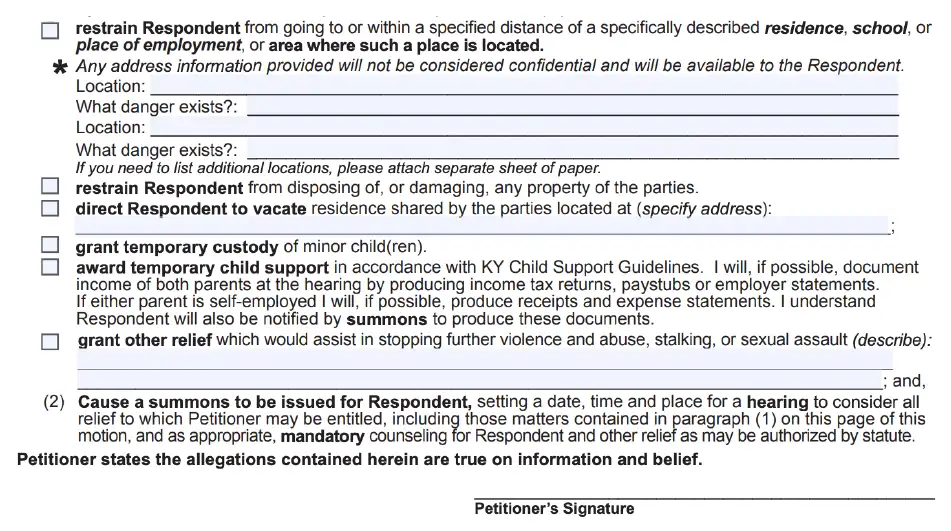
Restrain Respondent from going to or within a specified distance or a specifically described residence, school, or place of employment, or area where such a place is located.
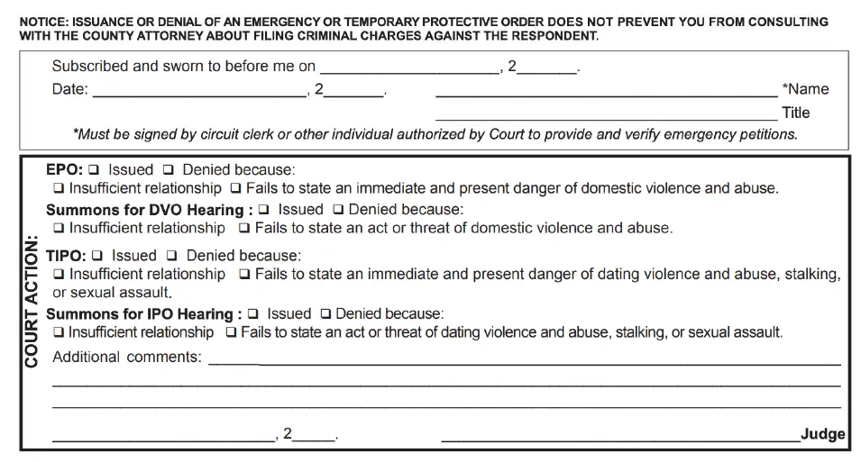
Here is the place where thejudge will submit their decision after reviewing the petition.
It will show whether or not this summon would take place and will the evidential hearing be set based on whether or not the judges believe domestic violence took place based on the testimony.
After reviewing the submitted petition and deciding that domestic violence or dating violence has occurred, the judge can issue an ex parte order granting special protections for the petitioner. These special protections are called Emergency Protection Orders (EPOs) and Temporary Interpersonal Protection Orders (TIPOs).
Types of Protection Orders：
Temporary Interpersonal Protection Order
Emergency Protection Order
EPOs and TIPOs are measures of protection for victims of domestic or dating violence that might presently be in danger. Judges can include all forms of standard remedies included within full Protection Orders.
Except temporary child support and counseling.
EPOs and TIPOs last up to 6 months (then they will expire and the victim need to file a new petition). The State is a rural, mountainous state so sometimes people are not found or they don't want to be found, which may cause the order to expire.
Where do attorneys fit in？
Attorneys provide counsel and representation to both petitioners and respondents in relation to the evidentiary hearing and issues of enforcement.
If the petitioner or respondent is indigent, then they are qualified to seek free representation with legal aid organizations.
Regardless of representation, it is the petitioner’s responsibility to first file a petition for protection order at their local courthouse.
Typically, petitioners will not have spoken with counsel prior to filing their petition.
If an attorney meets with their client prior, there are a few things that they can discuss to improve the client’s chances of getting an EPO/TIPO.
When talking with a client prior to filing their petition:
♦ Confirm what type of protection order they want to receive;
♦ Emphasize instances of violence or harm covered explicitly by the statute（can't tell them what to say or what to write）;
♦ Encourage them to be truthful, direct, and inclusive.(A judge may rule that a new instance not covered in the petition that is brought up in the evidential hearing cannot be submitted to the court because the respondent does not have specific notion or this instance and is not prepared to respond to that particular. Encourage your client to write what they know and what they remember about the experience of domestic violence or dating violence )
Preparing for the hearing
After the client has petitioned for her protection order, she and the Respondent will receive a set hearing date. By the time the client has sought counsel, only a few days remain before the hearing. Therefore discovery during this time is crucial.
Typically, this is when the client will have their first conversation with you. There are a few key things to remember in you first discussion with your petitioner-client.
♦ Confirm whether your client feels secured. If they don’t feel secured, she may not be able to tell you what happened. Comfort them and tell them they are safe now. If their mental status disable them of illustrating their cases, you can refer them to professional health organization.
♦Patiently listen to the client. Your client has likely experienced extreme trauma. They might be isolated from social interaction for a long time and it may be difficult for them to reveal their deepest pain to you. In that case, you should first be a human to comfort her as well as an attorney to solve their cases.
♦Note-taking, Recording and Eye Contact. If on the phone, take notes of the legally relevant facts and parties. If in person, request to record the conversation. Pay attention to eye contact. When you are taking notes, remember to keep the frequency of eye-contact.
Your client may not want to talk about the most egregious acts of violence they’ve encountered. Therefore you need to explain to them why you need to know all the details and how knowing these details can help you to help them to get all the protection they need.
After they have recounted their situation, ask pointed questions about incidents that relate to prohibited activities under the statute, e.g. Does the Respondent keeps calling you over and over? Does the Respondent stalk you?
Another thing to keep in mind is you need to ask your client “what will the Respondent say about that”. This can help you in relevant weakness analysis and be more prepared in court.
What to look for
when conducting discovery:
⭕ Pictures/videos of injuries or damage caused during instances of assault
⭕ Medical reports
⭕ Police reports
⭕ Friends or acquaintances who have witnessed the abuse firsthand
⭕ Text messages (Use cautiously. There are many ways of explaining the content of these messages. These messages might be utilized by the Respondent to attack your client)
These will all be need to be verified at the hearing.
If possible, check in consistently with your client.
Has the Respondent tried to contact her or destroy her property?
Has she changed her mind as to any of the conditions as stipulated in EPO/TIPO?
Is she considering dropping the action? Why? (Sometimes the client may drop the action because they are too frightened to face the Respondent)
At the Hearing
The Basic Flow of the Hearing:
1. At the hearing, the Petitioner will speak first. At this time, you will ask your client to testify about the relationship.
2. After resting, the Respondent will be able to present his case and cross examine your client’s testimony, as well as any witnesses called.
3. Following the Respondent’s presentation, it is then possible to cross examine his testimony and any witness called.
If the judge decides that domestic or dating violence has occurred and will occur again beyond a preponderance of the evidence (51% certainty), then a Protection Order will be issued. The length and conditions of the Protection Order will vary but cannot last beyond 3 years.After three years has elapsed, the order can be renewed at the discretion of a judge.
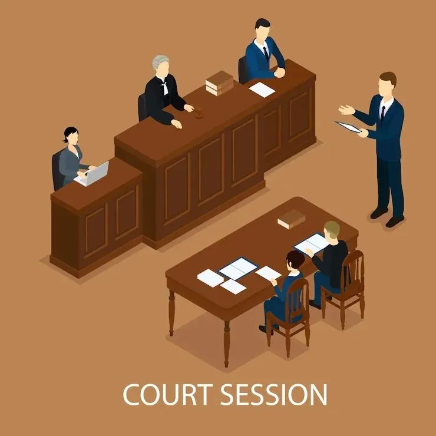
After the Hearing
In Kentucky, a law has been issued in 2020 protecting the victim’s rights which include items like “You have the right, upon request, to be informed about victims’ rights, criminal proceedings, and if the accused is arrested, released, or escapes”.
There are also a few complications that might occur after the hearing. For example, the Respondent may appeal the decision, the Petitioner may want to renew contact with the Respondent maybe because of child issues and the Respondent may violate the order.
In Kentucky, special attention should be paid to special groups. Those who speak English as a second language form a big community in Kentucky. If they are involved in domestic violence cases, they may need interpreters or translators to help. There are also undocumented immigrants who suffer from domestic violence. Their undocumented identity may get them deported. In that case, the judge usually minimize the influence of their illegal identity and try to offer help as much as possible.
Another tricky situation is about minors. Special agencies are set to deal with minors cases. In issuing interpersonal protection orders, the judge should consider the fact that the two minors may come from the same school and their meeting may be unavoidable.
Resources：
https://greenhouse17.org/
https://ampersandky.orgl
https://www.lexingtonky.gov/sites/default/files/organization-page/2018-05/FAYETITE%20COUNTY%20DOMESTIC%20VIOLENCE%20RESOURCES%2005.17.18%20black%20and%2 Owhite.pdf
Transcribe & Translate丨Huihui Kang、Zili Qiu
Proofread丨Danling Wang
Typeset丨Jialei Xu
Auditor丨Yimar
中文翻译版：
Avoice公益讲座丨美国反家暴法简介与家暴案件实务
Link to Avoice introduction